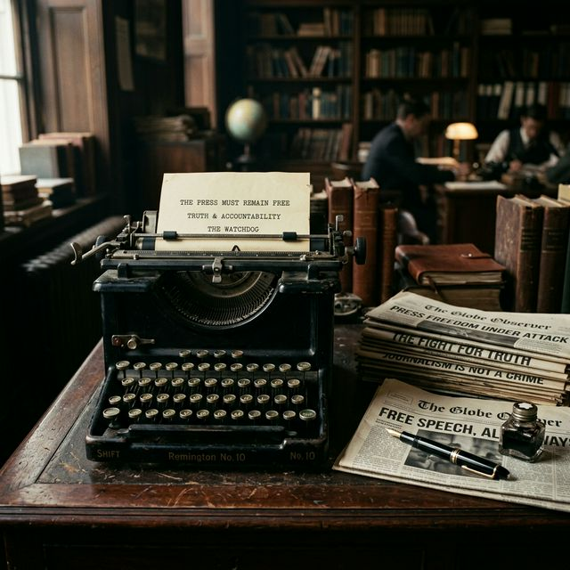
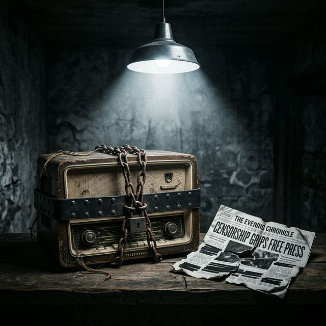
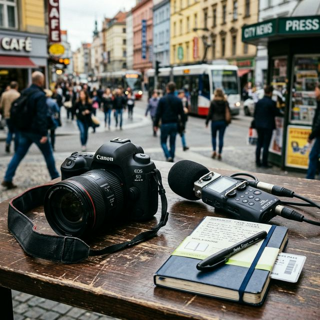

La liberté de la presse, un pilier de la démocratie

Problématique : En quoi la liberté de la presse et la liberté de l’information sont-elles essentielles pour la démocratie et pourquoi peuvent-elles être menacées ?
I. La liberté de la presse : un pilier de la démocratie
La liberté de la presse permet aux journalistes et aux médias de diffuser des informations librement, sans être censurés par le pouvoir politique.
En France, cette liberté est protégée par la loi du 29 juillet 1881. Cette loi permet aux journalistes d’enquêter, de publier des informations et de critiquer le pouvoir.
"En France, la liberté de la presse est protégée par la loi du 29 juillet 1881, permettant aux journalistes d’enquêter et de critiquer le pouvoir librement."
Les journalistes peuvent aussi révéler des scandales ou des abus. Par exemple, le site d’investigation Mediapart a révélé l’affaire impliquant le ministre Jérôme Cahuzac en 2012. Cette enquête a montré que ce ministre possédait un compte bancaire caché à l’étranger.
Cet exemple montre que la presse peut surveiller les responsables politiques et informer les citoyens.
II. La liberté de la presse dans les régimes autoritaires

Dans certains pays, la liberté de la presse n’existe presque pas. Les médias sont contrôlés par l’État et les journalistes ne peuvent pas critiquer le gouvernement.
Par exemple, en Corée du Nord, les médias sont entièrement contrôlés par le pouvoir. Les journalistes doivent diffuser uniquement les informations autorisées par le régime.
Chaque année, l’organisation Reporters sans Frontières publie un classement mondial de la liberté de la presse. Ce classement montre que dans certains pays les journalistes peuvent être arrêtés, menacés ou censurés.
Selon le rapport mondial de RSF, la situation de la liberté de la presse est jugée comme « très grave » dans une trentaine de pays, et des centaines de journalistes sont actuellement emprisonnés dans le monde.
Dans ces pays, les citoyens n’ont donc pas accès à une information libre.
III. Un lien étroit avec les libertés d’opinion et d’expression
La liberté de la presse est indissociable des libertés d’opinion et d’expression. En effet, pour qu’une presse soit libre, les individus doivent pouvoir exprimer leurs idées sans crainte de répression.
Les journalistes doivent pouvoir enquêter, publier et critiquer librement. De même, les citoyens doivent pouvoir partager leurs opinions, débattre et accéder à des points de vue différents.
Ces libertés sont complémentaires : sans liberté d’expression, la presse ne peut pas fonctionner librement ; sans presse libre, la liberté d’expression perd en visibilité et en impact.
IV. Liberté d’expression et pluralisme de l’information
La liberté de la presse est liée à la liberté d’expression et à la liberté d’opinion. Ces libertés permettent aux personnes d’exprimer leurs idées et de débattre.
Elles permettent aussi le pluralisme de l’information. Le pluralisme signifie qu’il existe plusieurs médias et plusieurs points de vue.
Grâce à cela, les citoyens peuvent comparer les informations et développer leur esprit critique.
Sans pluralisme, l’information pourrait être contrôlée par un seul pouvoir ou une seule idée.
V. Le travail des journalistes

Les journalistes ont pour mission principale d’informer les citoyens de manière fiable et vérifiée. Pour cela, ils doivent rechercher des informations, vérifier leurs sources et croiser les données afin d’éviter les fausses informations.
Leur travail demande de la rigueur, de l’honnêteté et de l’indépendance. Ils doivent respecter des règles déontologiques, comme ne pas diffuser de fausses informations ou protéger leurs sources.
Les journalistes peuvent travailler dans des domaines variés : presse écrite, télévision, radio ou internet. Certains sont spécialisés dans l’investigation et mènent des enquêtes approfondies sur des sujets sensibles.
Cependant, leur travail peut être difficile et parfois dangereux, notamment dans les pays où la liberté de la presse est limitée. Même dans les démocraties, les journalistes font face à de grandes difficultés comme la pression de certains milliardaires qui rachètent les médias, la précarité du métier, la diffusion de fake news sur les réseaux sociaux qui discrédite le travail des journalistes, ou encore le cyberharcèlement lorsqu'ils publient des enquêtes sensibles. Malgré cela, ils jouent un rôle essentiel pour informer la population et garantir la transparence.
VI. Le rôle de l’ARCOM
L’Autorité de régulation de la communication audiovisuelle et numérique (ARCOM) est une institution française indépendante chargée de surveiller les médias audiovisuels (télévision, radio) et numériques.
Son rôle principal est de garantir le respect de la liberté d’expression tout en veillant à l'application des lois. Elle s’assure notamment que les médias respectent le pluralisme de l’information, c’est-à-dire la diversité des opinions et des points de vue dans les débats.
Dans le domaine politique, l'ARCOM joue un rôle de gendarme très strict. Pour garantir ce pluralisme, elle chronomètre littéralement le temps de parole et le temps d'antenne des personnalités politiques à la télévision et à la radio. L'objectif est de s'assurer que le gouvernement, la majorité et les différents partis d'opposition puissent s'exprimer de manière équitable, tout particulièrement pendant les périodes électorales.
L’ARCOM contrôle également les contenus diffusés pour protéger le public. Elle peut intervenir, mettre en demeure et même sanctionner financièrement les chaînes en cas de désinformation, de diffusion de propos haineux, ou pour assurer la protection des mineurs.
Cette protection est au cœur des débats actuels, notamment avec les projets visant à interdire l'accès aux réseaux sociaux pour les moins de 15 ans. Cela pose une vraie question démocratique : comment protéger les jeunes face aux algorithmes et aux fausses informations, sans pour autant limiter leur droit à s'informer ?
Ainsi, l’ARCOM contribue directement au bon fonctionnement de la démocratie en garantissant une information pluraliste, respectueuse et encadrée.
Conclusion
La liberté de la presse est un élément essentiel de la démocratie. Elle permet aux citoyens d’avoir accès à des informations variées et de comprendre les enjeux politiques et sociaux.
Cependant, dans certains pays, cette liberté est limitée ou inexistante. Les journalistes peuvent être censurés ou menacés.
C’est pourquoi le travail des journalistes et l’action d’organisations comme Reporters sans Frontières sont essentiels pour défendre la liberté de la presse.
Enfin, des institutions comme ARCOM permettent de protéger le pluralisme de l’information et le bon fonctionnement de la démocratie.